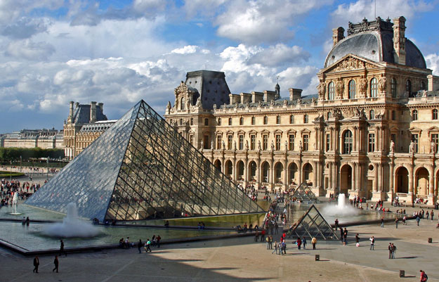
Het Louvre, Paleis & museum
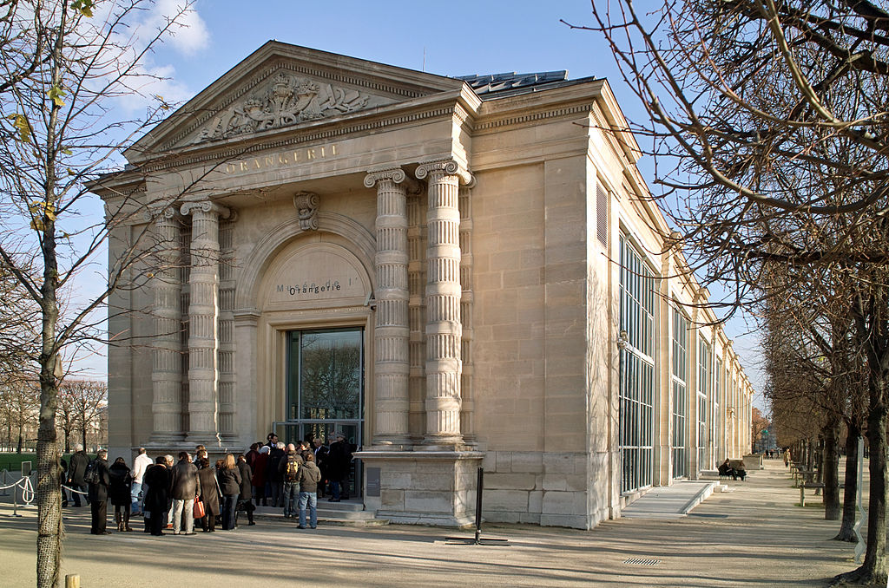
Het Musée d'Orsay & Musée de l'Orangerie
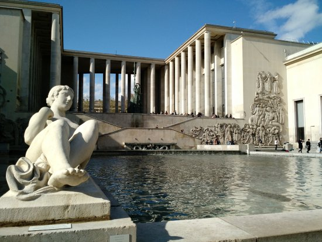
Musée d'Art moderne de la Ville de Paris
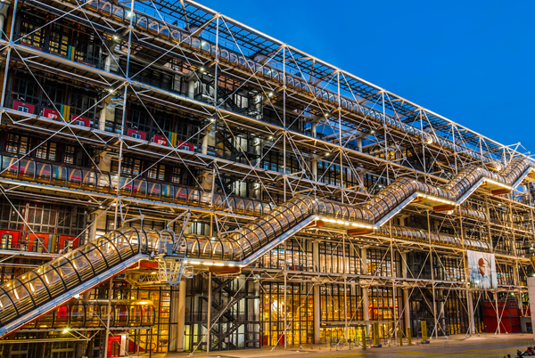
Centre Pompidou & atelier Brancusi
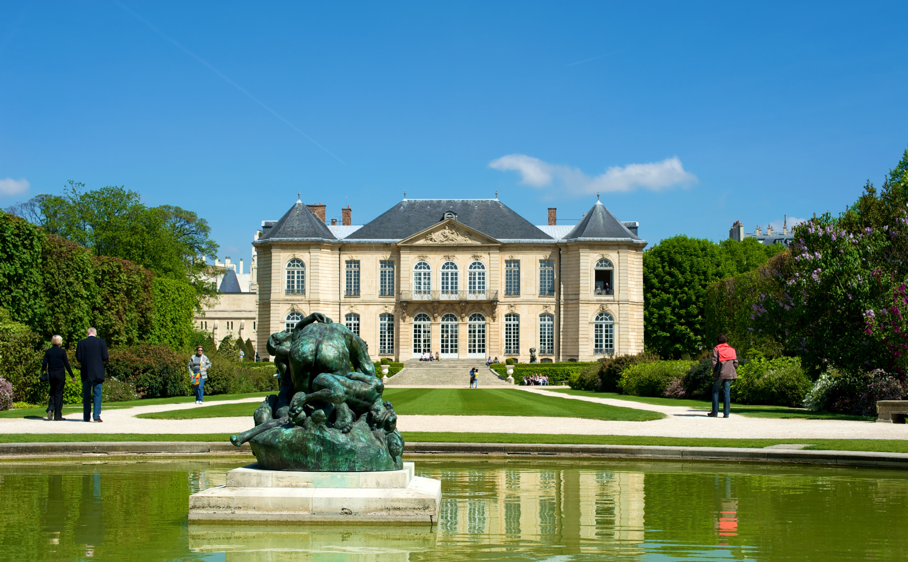
Musée Rodin & Dome des Invalides

Musée Picasso
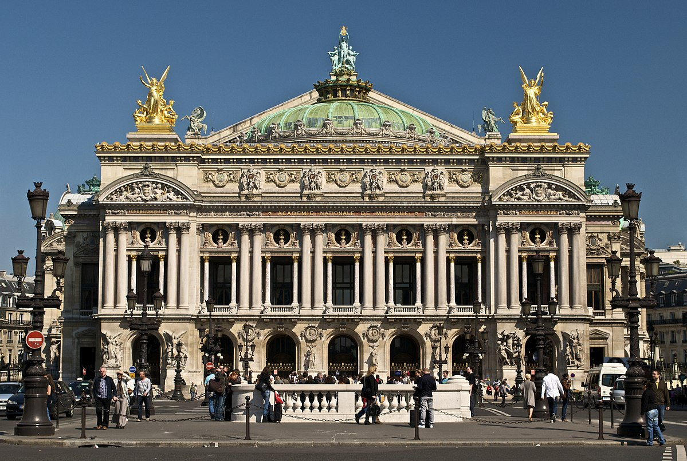
Opéra Garnier & Opéra Bastille
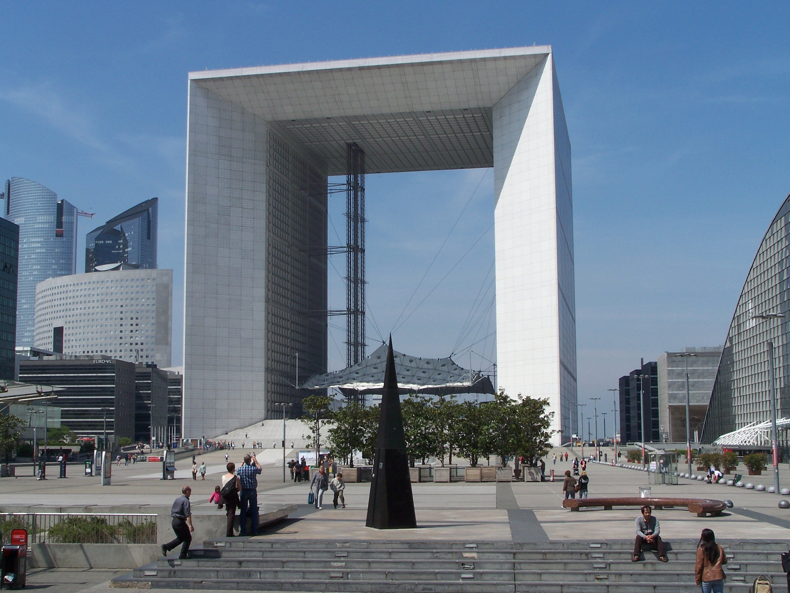
La Défense, de Grande Arche & de beeldenroute
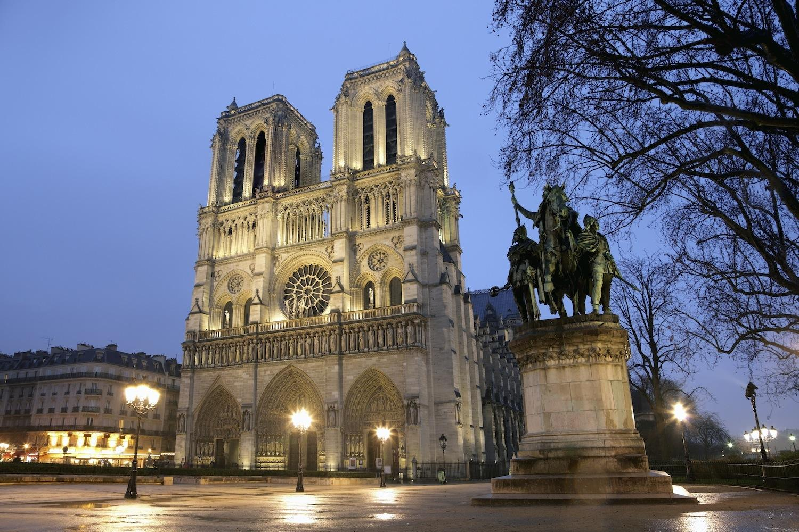
Notre-Dame, Sainte Chapelle & de Conciergerie
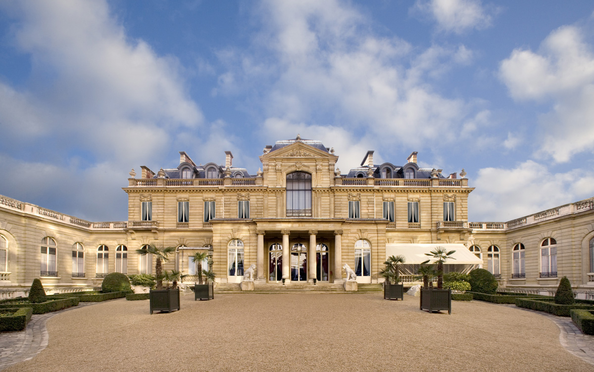
Musée Jacquemart André
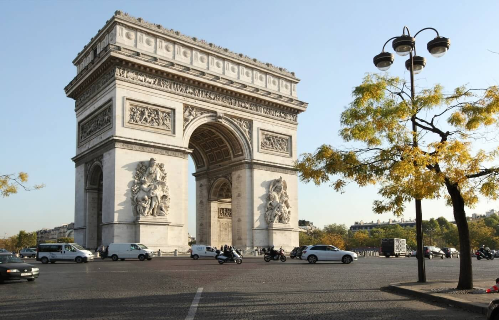
Arc de triomphe, Madeleine kerk, Palais Bourbon, Arc de triomphe du carousel & Dôme des Invalides
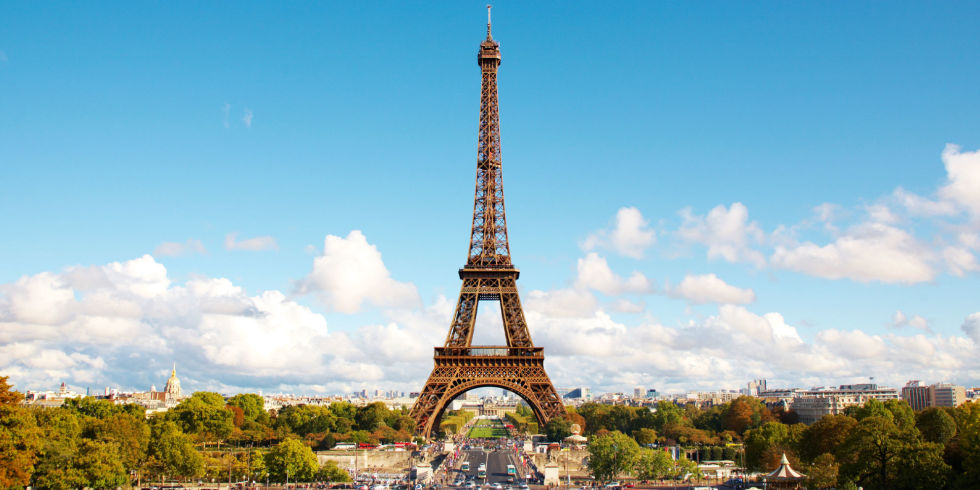
Wereldtentoonstellingen 1889 en 1900, Eiffeltoren & Grande- en Petit Palais